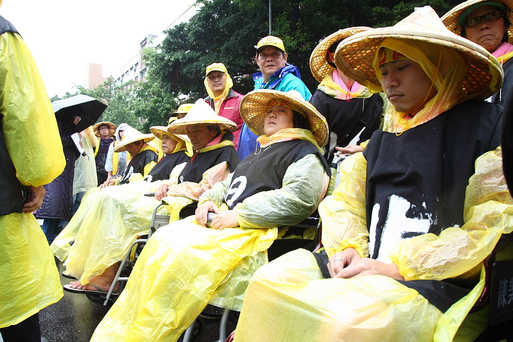
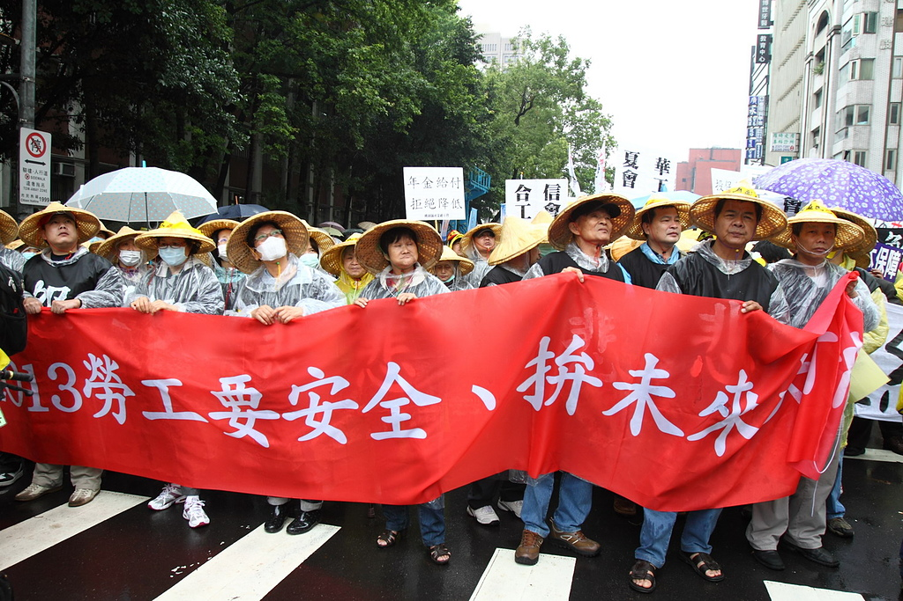
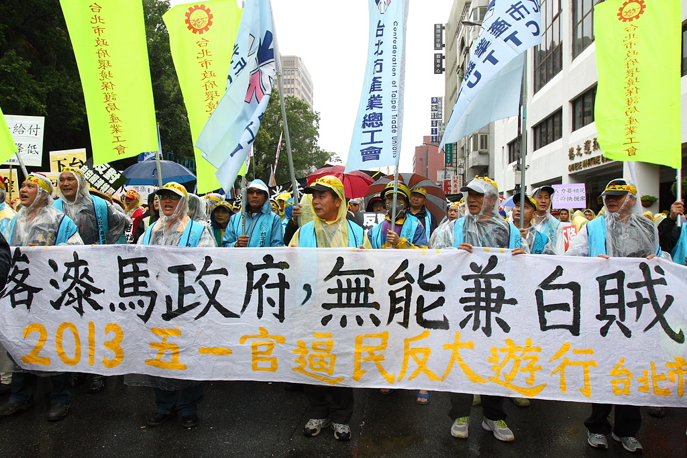
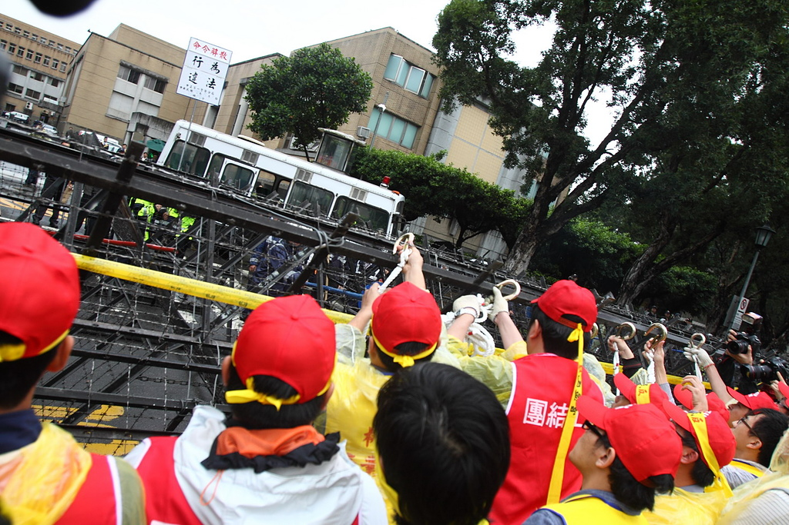
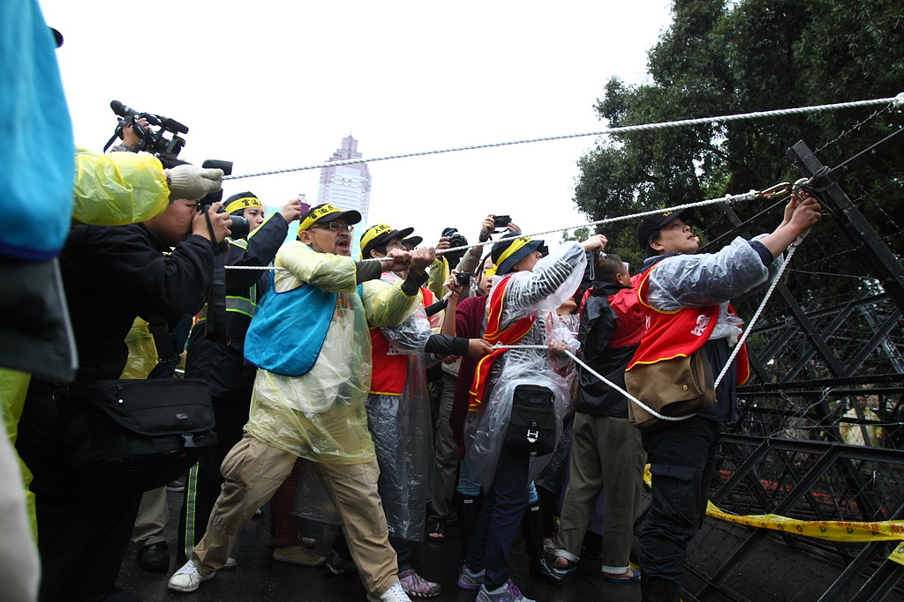
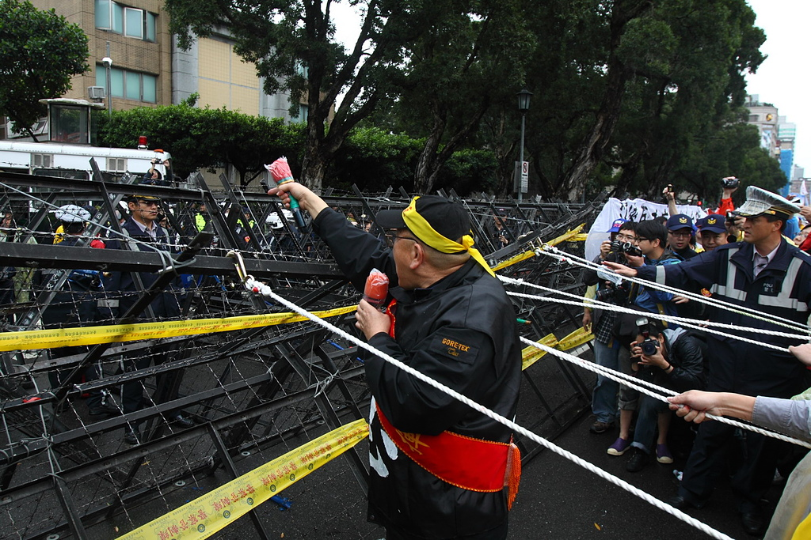

關廠工人從4月28日開始絕食至今已達72小時，仍上街表達訴求，要求應修法勞基法28條，擴大墊償至退休金資遣費，圖：張榮隆

關廠工人從4月28日開始絕食至今已達72小時，仍上街表達訴求，要求應修法勞基法28條，擴大墊償至退休金資遣費，圖：張榮隆

2013五一遊行 拒馬包圍勞工 反年金修惡、挺關廠工人、終結責任制，圖：張榮隆

警方已佈設層層拒馬包圍整個行政院，並且派出5百多名警力嚴正以待，遊行隊伍拉扯拒馬，表達勞工對於年金修惡的憤怒，圖：張榮隆

遊行隊伍在行政院前，群眾手持繩索與鐵鉤拉扯拒馬，拒馬後方的警力則是手持長竹竿，干擾群眾的拉扯，圖：張榮隆

遊行隊伍在行政院前，群眾手持繩索與鐵鉤拉扯拒馬，拒馬後方的警力則是手持長竹竿，干擾群眾的拉扯，圖：張榮隆